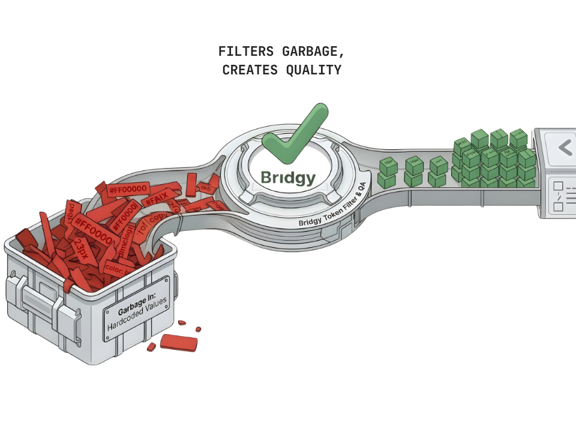
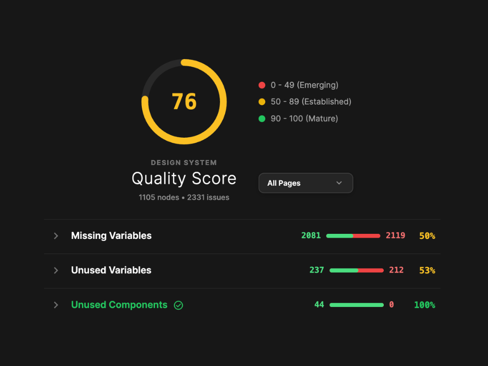
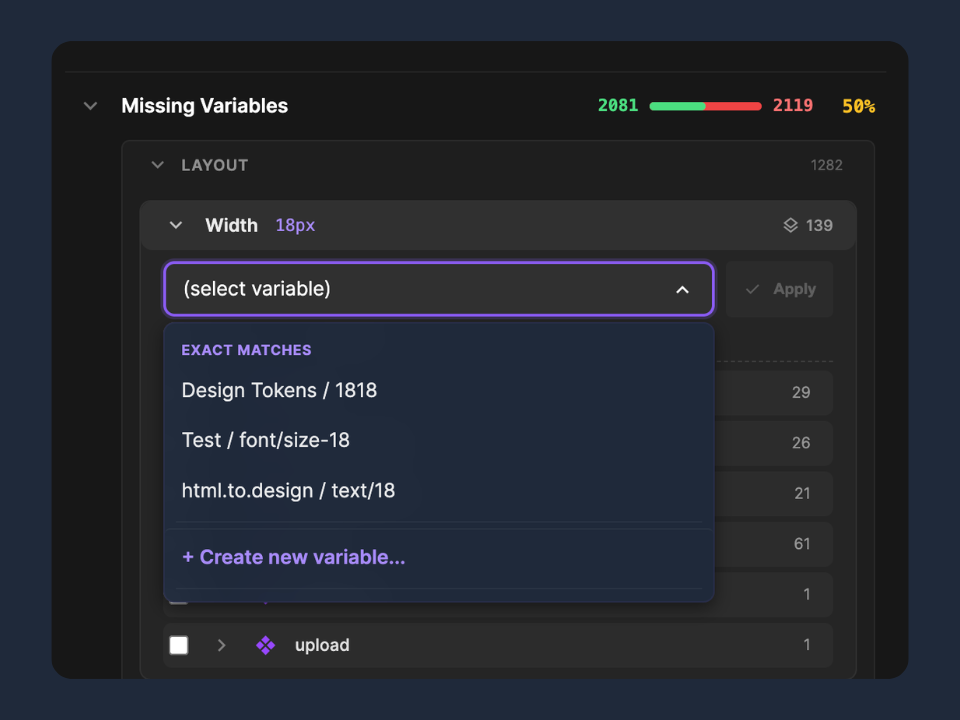
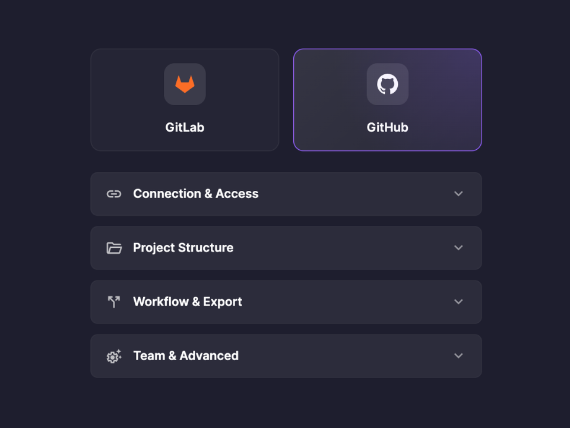

Bridgy
Token-Driven Quality Assurance for Figma Design Systems: Eine intelligente Brücke, die den Graben zwischen UI/UX-Design und Frontend-Entwicklung schliesst.

Ausgangslage
In der modernen Softwareentwicklung führt die manuelle Übergabe (Handoff) von Designs an die Programmierung häufig zu Inkonsistenzen und fehleranfälligen Workflows. Bisherige Automatisierungstools versuchen oft, Code direkt aus ungeprüften Designs zu generieren. Das scheitert meist am sogenannten "Design-to-Code Impedance Mismatch": Wenn Entwürfe im Design-Tool nicht konsequent strukturiert sind, werden diese Fehler ungeprüft in die Codebasis übertragen ("Garbage In, Garbage Out"). Es entsteht technische Schuld, die schwer zu warten ist.
Zielsetzung
Ziel der Bachelorarbeit war ein methodischer Paradigmenwechsel: Weg von der reaktiven Fehlerbehebung im Code, hin zu einer präventiven Qualitätssicherung direkt an der Quelle im Design-Tool ("Shift-Left"). Es sollte ein geschlossener Regelkreis (Closed-Loop-System) für Figma entwickelt werden, der die "Gesundheit" eines Design Systems messbar macht, Inkonsistenzen aufzeigt und bereinigte Daten nahtlos in die Versionskontrolle der Entwicklungs-Teams überträgt.
Der DSQ-Score

Bridgy analysiert das Design und berechnet einen verständlichen Quality-Score. Fehler wie hartkodierte Farben werden sofort sichtbar.
Intelligentes Auto-Fixing

Das Plugin macht keine unvorhersehbaren Änderungen, sondern bietet deterministische Lösungsvorschläge (Exact Match) zur Behebung von Fehlern an.
Native Git-Integration

Saubere Design-Tokens können direkt als Merge Request in GitLab oder GitHub exportiert werden, was Silos zwischen den Teams aufbricht.
Ergebnisse
Mit "Bridgy" wurde ein voll funktionsfähiges und sicheres Figma-Plugin entwickelt, das als vermittelndes Element (Boundary Object) zwischen Design und Code fungiert. Zu den zentralen Features gehören:
- Design Linting: Rekursive Überprüfung auf hartkodierte Werte und ungenutzte Komponenten.
- Automatisierte Tailwind-Readiness: Prüfung und Anpassung von Variablen an moderne Framework-Konventionen.
- Sicherer Datenaustausch: Direkter Export in CSS, SCSS oder Tailwind via Git, abgesichert durch lokale AES-256-GCM Verschlüsselung der Zugangstokens.
- Smart Import: Änderungen aus dem Code können via Copy-Paste mit einer detaillierten Diff-Vorschau wieder nach Figma zurückgeführt werden.
Die Evaluation durch Fachexperten (Product Manager, UX-Designer und Frontend-Entwickler) bestätigte die Wirksamkeit eindrücklich: Das Tool reduziert den Handoff-Overhead massiv, steigert die Codequalität durch saubere Inputs und wandelt die historisch fehleranfällige Übergabe in einen kollaborativen Prozess.
Technische Schlüsselbegriffe
- FigmaPlugin API
- ArchitekturDesign Tokens
- MethodeShift-Left QA
- SecurityWeb Crypto API (AES-GCM)
- IntegrationGitLab / GitHub REST API
- Tech-StackTypeScript, Vanilla JS
Auftraggeber
Institut für Mobile und Verteilte Systeme (IMVS)
Fachhochschule Nordwestschweiz (FHNW)
Website des IMVS
Team
Samuel Lupica
Laurin Scheuber
Betreuer
Prof. Martin Kropp
Fabian Affolter